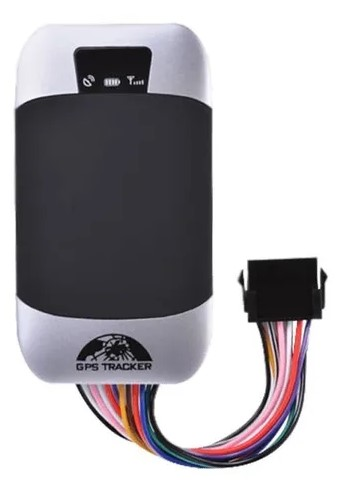

Llantas
Entrega a tu vehículo mayor tracción en ruta y reduce su ruido exterior, garantizando además mayor seguridad y suavidad en tu conducción, utilizando para ello el Neumático 175/70r14 84t rp18 de Autostyle.
Precio: 80.000
|
LlantasEntrega a tu vehículo mayor tracción en ruta y reduce su ruido exterior, garantizando además mayor seguridad y suavidad en tu conducción, utilizando para ello el Neumático 175/70r14 84t rp18 de Autostyle. Precio: 80.000 |
 |
Volante de cueroCubierta de cuero para volante de coche, accesorio antideslizante para Toyota Rav4 Wildlander RAV4 LE AWD GTQ6440, marca DERMAY 100% Precio: 69.990 |
|  |
GPS TRACKER 303F MOTOProgramar acciones como limitar un área geográfica, parar el motor del vehículo en caso de robo, función espía, aviso SOS en caso de robo, secuestro o accidente, y mucho más. Precio: 250.000 |